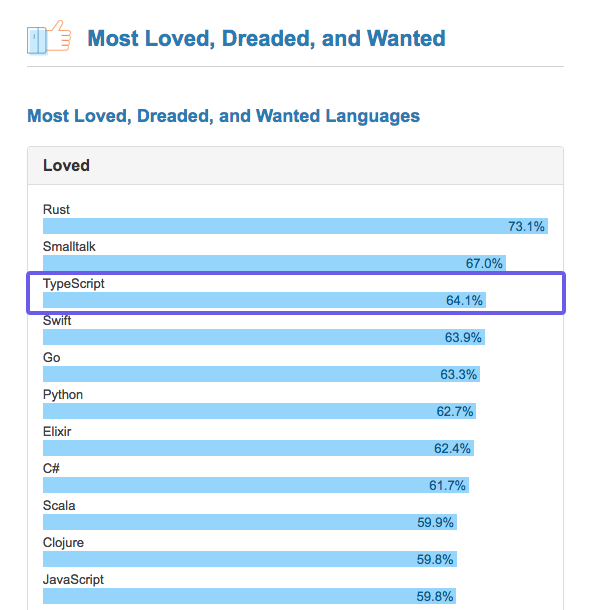
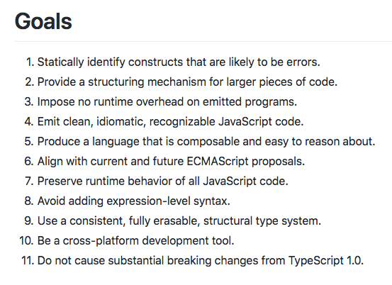

Intro to TypeScript
Dan Imhoff / @dwieeb
Josh Thomas / @jthoms1

I  JavaScript
JavaScript
I TypeScript
I TypeScript
I am not the only one.
JavaScript that scales.
Typescript's Beginnings
- Released in October 2012 (0.8)
- Created by Anders Hejlsberg
- Open Source
- Created because of the explosive growth of JavaScript
Who is using it?
- Angular
- Lyft
- Microsoft
- Dojo
- Ionic
- Epic
But what is it?
- "Superset" of JavaScript
- Type system for JS Basic Types Available
- Compiles to plain JS
Goals of TypeScript
Why types?
- Improve code quality & understandability
- Boost refactoring speed and effectiveness
Lets add it to an existing project
- Drop in a tsconfig.json and start compiling
- Incrementally add types
- Get Strict
The Type System
Type System
- Static, but gradual: types don't change during runtime, but are opt-in
- Structural: structure of an object preferred over the name of its class (duck typing)
- Inferred: data types of expressions can be inferred by the compiler
Declaration Spaces
- Value space: classes, functions, variables
- Type space: classes, interfaces, type annotations & aliases
Declaring Types
var num: number = 1;
function slugify(input: string): string {
// implementation
}
Implicit vs Explicit
let num = 1; // implicit, AKA inferred
let num: number = 1; // explicit
Type Inference
/**
* Cases: a > b: return 1
* a < b: return -1
* a = b: return 0
*/
function strcmp(a: string, b: string) {
if (a === b) {
return 0;
}
return a > b ? 1 : -1;
}
let result = strcmp("foo", "bar");
Interfaces
Interfaces
- Defined in type declaration space
- Duck typed
- Meant for describing the shape of objects, classes, and functions
- Can be named or anonymous
- Can be "implemented"
- Can be "extended"
Implementing Interfaces
- "This class must adhere to this interface"
- Classes can implement one or more interfaces
interface Reader {
read(bytes: number): string;
}
class FileReader implements Reader {
read(bytes: number) {
// implementation
}
}
Extending Interfaces
interface Reader {
read(bytes: number): string;
}
interface Writer {
write(str: string): void;
}
interface ReadStream extends Reader {
pipe(destination: Writer): void;
}
interface ReaderWriter extends Reader, Writer {}
Type Aliases
- Defined in type declaration space
- Used for type declaration reusability
type MyCustomType = string;
type MyCallbackFunc = (err: Error, data: MyInterface) => void;
Union Types
- Two or more joined types
- "this or that"
let strOrNum: string | number = "a string";
strOrNum = 12345; // ok
Intersection Types
- Two or more joined types
- "this and that"
interface Foo {
foo: number;
}
interface Bar {
bar: number;
}
let foobar: Foo & Bar = { foo: 1, bar: 2 };
Generics
- Allows a component to work over a variety of types
- Example: you can have arrays of anything
let meetups: Array<string> = ["GDG", "MadJS", "MadPy"];
let meetups: string[] = ["GDG", "MadJS", "MadPy"];
let meetups = ["GDG", "MadJS", "MadPy"];
let p = new Promise<number>(function(resolve, reject) {
resolve("nope."); // compile error
});
p.then(function(value) {
// 'value' is a number, no explicit types needed
});
Defining Generics
- Generics have one or more type parameter
function fillArray<T>(array: any[], value: T): T[] {
// implementation
}
let result = fillArray<string>([1, 2, 3], '');
let result = fillArray([1, 2, 3], '');